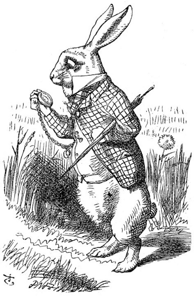

Alice, ırmağın kıyısında, ablasının yanı başında hiçbir şey yapmadan öylece oturmaktan sıkılmaya başlamıştı; ablasının okuduğu kitaba bir iki kez şöyle bir göz attı; ne ki, kitapta ne bir resim vardı, ne de bir konuşma, “İçinde resim ve konuşma olmayan bir kitap, ne işe yarar ki,” diye geçirdi aklından, Alice.
Böylece, taç yapmak için kalkıp papatya toplamasının zahmete değip değmeyeceğini düşündüğü sırada (sıcaktan uykusu gelip sersemlediğinden, düşünebildiği de pek söylenemezdi ya) aniden, pembe gözlü beyaz bir tavşanın yanından koşarak geçtiğini gördü.
Bunda öyle çok fazla bir olağanüstülük yoktu; Tavşan’ın kendi kendisine, “Eyvah, geç kaldım!” diye söylenişinde de fazla bir gariplik bulmamıştı (sonraları düşününce, gerçekten bunlara şaşırmış olması gerektiğini anlayacaktı; ama nedense o an her şey doğal gibi gelmişti ona); fakat ne zaman ki Tavşan, yeleğinin cebinden bir saat çıkarıp ona bakarak hızlandı, o zaman Alice, beyninde şimşekler çakarak ayağa fırladı; çünkü bir yeleği ve cebinden çıkaracak saati olan bir tavşana ömründe hiç rastlamamıştı; meraktan tutuşmuş bir halde, Tavşan’ın ardı sıra tarlayı koşarak geçti ve neyse ki tam zamanında yetişip, Tavşan’ın bir çitin altındaki kocaman deliğe giriverdiğini görebildi.
Delikten bir daha nasıl çıkacağını hiç düşünmeden, Alice de gitti Tavşan’ın ardından.
Tavşan deliği tıpkı bir tünel gibi dümdüz ilerliyordu; birden aşağıya doğru meyletmeye başladı; her şey öylesine ani olmuştu ki, Alice, daha nasıl duracağını düşünmesine fırsat kalmadan, kendini bir anda aşağıya doğru düşerken buldu.
Ya kuyu çok derindi, ya da Alice çok yavaşça düşüyordu, öyle ki, aşağıya doğru giderken, etrafını seyredip, bundan sonra olacakları merak edecek kadar bol zamanı oluyordu. Önce, aşağıya bakarak, neye doğru gittiğini anlamaya çalıştı, ama öyle karanlıktı ki hiçbir şey göremiyordu; sonra, dönüp etrafına kuyunun duvarlarına baktığında, her tarafın dolap ve kitap raflarıyla dolu olduğunu fark etti; orada burada tahta çivilere asılı resim ve haritalar vardı. Raflardan birinden bir kavanoz aldı geçerken; üzerinde “PORTAKAL MARME-LATI” etiketi vardı, ama ne yazık ki içi bomboştu; vurur birilerini öldürebilirim korkusuyla, kavanozu aşağıya atmak istemedi, bu yüzden, onu geçerken dolaplardan birine zar zor yerleştiriverdi.
“Eh!” dedi, Alice kendi kendine, “Böyle bir düşüşten sonra, bir daha merdivenlerden yuvarlansam da vız gelir! Evde herkes bana ne kadar cesursun diyecek! Damdan düşsem ne yazar. (Bu, pek olmayacak bir şey de değildi üstelik), bundan hiç kimseye söz etmem ki.”
Düş ha düş. Hiç mi sonu gelmeyecekti bu düşüşün? “Şu ana kadar acaba kaç kilometre aşağı indim?” dedi bağırarak. “Dünyanın merkezinde bir yerlere yaklaşmış olmalıyım. Dur bi bakalım: Sanırım, altı bin beş yüz kilometre ediyordu.” (Görüyorsunuz ya, Alice okuldaki derslerinde epey bir şey öğrenmişti: gerçi etrafta onu dinleyen kimse olmadığından, bilgisiyle fiyaka satacağı yer değildi ya burası, yine de olsun, pratik yapmış oluyordu.) “Evet, uzaklık bu kadar olacaktı... fakat o halde acaba ben hangi enlem ve boylama geldim?” (Alice’in enlem ve boylamın ne demek olduğuna ilişkin hiçbir fikri yoktu ya, yine de bunlar hoş ve gösterişli sözcüklerdi.)
İşte, yine başlamıştı kendi kendine konuşmaya. “Acaba, doğruca dünyanın içinden geçip öbür tarafından mı çıkacağım? Baş aşağı yürüyen insanların arasına çıkmak kim bilir ne eğlenceli olacak? Antipati miydi neydi... (ağzından çıkan sözcük kendisine de çok doğru gelmediğinden, o anda kimsenin onu dinlemediğine pek memnun olmuştu.)... tabii ya, burasının hangi ülke olduğunu sorarım birilerine. Affedersiniz, hanımefendi, burası Yeni Zelanda mı? Yoksa Avustralya mı?” (Konuşurken de, eğilip diz kırarak selam vermeye çalışıyordu... aşağı doğru giderken, böyle selam verdiğinizi bir düşünün bakalım! Yapabilir misiniz?) “Kimbilir kadın beni nasıl da bilgisiz küçük bir kız sanacak? Yok, yok, sormak pek iyi bir fikir değil. Belki de olur a, bir yerlerde bir tabela görürüm.”
Düş ha düş. Yapacak hiçbir şey yoktu, böylece Alice yeniden konuşmaya başladı. “Bu gece Dinah beni nasıl da özleyecek!” (Di-nah, kedisi oluyordu.) “Umarım, çay zamanı tasına süt koymayı akıl ederler. Dinah, canım benim, keşke sen de aşağıda benimle olabilseydin. Şansa bak ki, buralarda hiç fare yok, ama olsun, yarasa yakalarsın, yarasa da hani, fare gibi bir şey işte. Yalnız, acaba kediler yarasa yer mi?” Alice’in çok uykusu gelmeye başlamıştı, sanki rüyadaymış gibi kendi kendine konuşmasına devam etti: ”Kediler yarasa yer mi? Kediler yarasa yer mi?” bazen de “Yarasalar kedi yer mi?” diyordu, gerçi ikisine de cevap veremedikten '» sonra, nasıl sorduğu pek de önemli değildi. İçinin geçtiğini hissetti, hattâ rüyasında Dinah ile el ele yürüdüğünü ve ona ciddi ciddi, “Hadi, doğruyu söyle, şimdiye kadar hiç yarasa yedin mi?” diye sorduğunu görmüştü; işte tam da o anda birden pat diye yere, kupkuru yaprakların üzerine iniverdi; düşüş bitmişti.
Hiçbir yeri acımamıştı, anında fırlayıp ayağa kalktı: Yukarı baktı, ama yukarısı zifiri karanlıktı; önünde de upuzun bir başka geçit uzanıyordu ve Beyaz Tavşan telaşla aşağıya doğru giderken hâlâ görüş alanındaydı. Kaybedecek hiç zamanı yoktu; Alice rüzgar gibi öne fırladı ve Tavşan tam köşeyi dönerken, onun şu sözlerini işitti: “Vah, kulaklarım, vah bıyıklarım, nasıl da geç kaldım!” Alice de onun hemen arkasından aynı köşeyi döndü, ama Tavşan ortalıkta görünmüyordu. Alice, tavana asılı bir dizi lambayla aydınlanan uzun, basık bir salonda buldu kendini.
Salonun dört bir yanında kapılar vardı; ne var ki hepsi kilitliydi; bir o yana, bir bu yana giderek her bir kapıyı açmayı denedikten sonra, oradan bir daha nasıl dışarı çıkacağını kara kara düşünerek salonun ortasına doğru yürüdü.
Birden, her tarafı camdan, üç ayaklı küçük bir masa gördü; üstünde, minik altın bir anahtardan başka bir şey yoktu. Alice, ilk önce, bu anahtarın salondaki kapılardan birinin olabileceğini düşündü; ama nafile! Ya delikler çok büyük, ya da anahtar çok küçüktü, sonuçta hiçbir kapıyı açamadı. Fakat salonu ikinci dolaşmasında daha önce fark etmediği alçak bir perdeyle karşılaştı, perdenin arkasında yaklaşık kırk santimetre yüksekliğinde bir kapı vardı, küçük altın anahtarı kapıya soktu: Yaşasın anahtar kapıya uymuştu!
Kapı, fare deliğinden çok fazla geniş olmayan küçük bir geçide açılıyordu: Yere çömelip, ömrünüzde görebileceğiniz en güzel bahçeye açılan bu geçide baktı. Bu karanlık salondan çıkıp, şu göz alıcı çiçek tarhlarıyla serin fıskiyelerin arasında gezmeye nasıl da can atıyordu, ne var ki kafasını bile kapıdan içeri sokamıyordu. “Kafam içeri girse ne olur ki,” diye düşündü, zavallı Alice, “omuzlarım girmedikten sonra.” Ah, keşke, tıpkı bir dürbün gibi küçülebilseydim! Nasıl başlandığını bir bilebilsem, bunu da yapabilirdim gibi geliyor bana.” O kadar çok olağanüstü şey olmuştu ki, Alice artık, imkânsız çok az şeyin olabileceğini düşünmeye başlamıştı.
Küçük kapının yanında beklemenin bir anlamı yok gibiydi, bu yüzden olur ya, masanın üstünde başka bir anahtar ya da bir şekilde insanları dürbün gibi küçültecek kuralların olduğu bir kitap bulmak umuduyla masanın yanına geri döndü: Bu sefer küçük bir şişe buldu masada (“Bu şişe demin kesinlikle burada değildi,” dedi Alice), güzel basılmış büyük harflerle “BENİ İÇ” yazılı kâğıt bir etiket vardı şişenin boynunda.
”Beni iç,” demek kolaydı, ne var ki, akıllı küçük Alice’in bunu hiç de aceleye getirmeye niyeti yoktu. “Yok, önce bakacağım,” dedi, “üstünde zehirli işareti var mı yok mu anlayacağım.” Öyle ya, Alice, orasını burasını yakan, ya da vahşi hayvanlara yem olan veya buna benzer kötü olaylarla karşılaşan çocuklarla ilgili birkaç güzel öykücük okumuştu; bunlar sırf, kızgın bir maşayı uzun süre tutarsan yanarsın; parmağını bıçakla çok derinden kesersen, genellikle kanatırsın türünden arkadaşlarından öğrendikleri basit kuralları anımsayamadıkları için başlarına geliyordu bu çocukların; hele, ‘zehirli’ yazısının olduğu bir şişeden çok içersen, er geç dokunacağı hemen hemen kesindir kuralını aklından hiç çıkarmamıştı.
Ancak, bu şişede, ‘zehirli’ yazısı yoktu, böylece Alice, cesaretini toplayıp, tadına bir bakıverdi, tadı çok hoşuna gittiğinden bitiriverdi hemencecik (gerçekten de, kirazlı tart, krema, ananas, kızarmış hindi, karamela ve tereyağlı kızarmış ekmek karışımı bir tadı vardı).
***
“Ne tuhaf bir his!” dedi Alice. “Galiba, bir dürbün gibi kısalıyorum.”
Gerçekten de öyleydi; Şimdi, artık yirmi beş santimden biraz uzuncaydı, şu küçük kapıdan içeri girip o güzel bahçeye gidecek kadar kısaldığı düşüncesi yüzünü ışıl ışıl etmişti. Ama, yine de, daha fazla kısalır mıyım diye birkaç dakika daha bekledi: Biraz tedirgindi; “Belki de bir mum gibi eriyip biteceğim. Acaba o zaman neye benzerim?” Bir mum alevinin söndürüldükten sonraki halini gözünün önüne getirmeye çalıştı, öyle ya, daha önce hayatında böyle bir şey gördüğünü hiç anımsamıyordu.
Bir süre bekleyip bir şey olmadığını görünce, hemen koşup bahçeye girmeye karar verdi; ama zavallı Alice tam kapıya varmıştı ki, küçük altın anahtarı unuttuğunu fark etti; almak için geri döndüğünde de, ne yazık ki, artık boyunun masaya yetişmediğini gördü. Anahtarı, camın altından çok rahat görebiliyordu, masanın ayaklarından birine tırmanabilmek için elinden gelen her şeyi yaptı, ama nafile, çok kaygandı; denemelerinden yorulup bitkin düşünce, yere oturup hüngür hüngür ağlamaya başladı zavallıcık.
“Hadi, hadi, böyle ağlamanın hiçbir anlamı yok!” dedi kendine sert bir tavırla. “Hemen şimdi ağlamayı kessen iyi edersin!” Kendine, genellikle çok iyi öğütler verirdi (bunlara nadiren uysa da), kimi zaman da gözlerinden yaş getirtinceye kadar paylardı kendini; hiç unutmuyordu, bir keresinde kendi kendine kroket oynarken, hile yaptığı için kendi kulaktozuna vurmuştu, çünkü bu tuhaf çocuk iki farklı insanmış gibi davranmaya bayılırdı. “Ama şimdi, iki farklı insanmış gibi davranmanın ne yararı var,” diye düşündü zavallı Alice. “Baksanıza, bu halimle doğru dürüst tek bir insan bile etmem!”
O sırada, gözü, masanın altında duran küçük cam bir kutuya takıldı. Kutuyu alıp açtı, içinde küçücük bir kek vardı, üzerine kuş üzümleriyle güzelce ‘BENİ YE’ yazılmıştı. “Peki yiyeceğim,” dedi, Alice, “bu kek boyumu uzatırsa, anahtara ulaşabilirim; yok eğer kısaltırsa, o zaman da, kapının altından sürünerek geçebilirim; öyleyse, her iki durumda da bahçeye gireceğim, hangisi olursa, olsun!”
Ağzına bir lokma kek attı, boyunun kısaldığını mı yoksa uzadığını mı anlamak için, elini başının üstünde tutarak, “Hangisi? Hangisi?” dedi kendi kendine tedirginlikle; aynı boyda kaldığını görünce oldukça şaşırmıştı. Kim kek yese genellikle böyle olurdu zaten, gelin görün ki Alice, normalin dışında olağanüstü şeylerin gerçekleşmesi beklentisine öyle bir alışmıştı ki, yaşamın tüm olağanlığıyla devam etmesi çok sıkıcı ve aptalca geliyordu.
Böylece, başladı kekini yemeye ve bitiriverdi hemen.